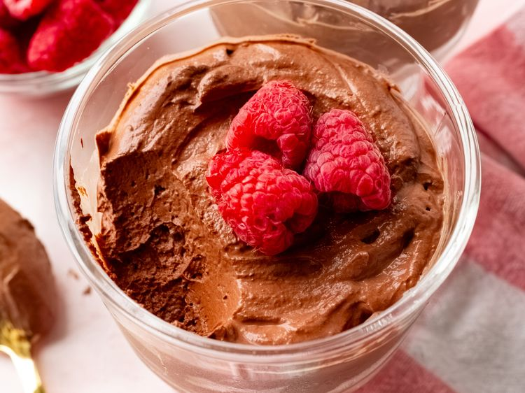

as the title said welcome to the best choco mousse you'll ever try. It's soft, tasty and healty.
Give it a try!
Place chocolate chips in a microwave-safe bowl. Heat in the microwave in 30 second intervals, stirring after every 30 seconds, until melted; about 1 minute. Set aside to cool slightly.
Beat Greek yogurt, cocoa power, maple syrup, vanilla, espresso powder and salt together in a large bowl with an electric mixer on medium speed until smooth and combined, about 30 seconds. Add melted chocolate and beat on medium speed until mixture is light and airy, 1 to 2 minutes. Taste, and add more maple syrup, if desired.
Divide mousse between 2 serving cups. Mousse can be served right away; but for the best flavor, cover and refrigerate for at least 1 hour before serving.
